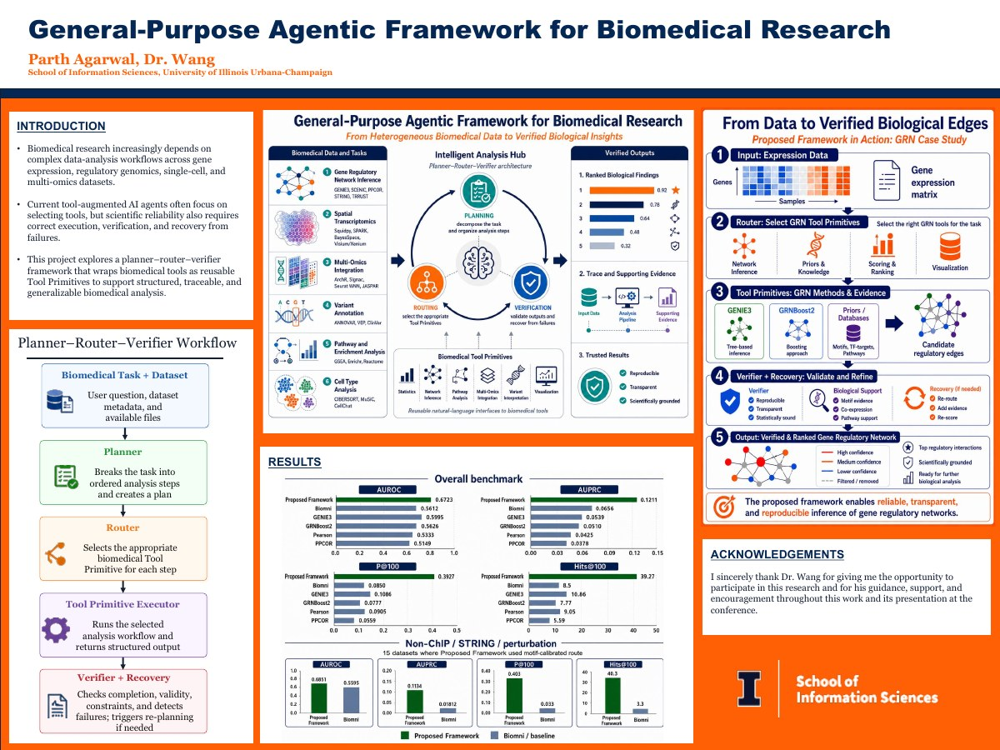

Verifiable agents & AI for science
Structured planning, reusable scientific tools, and independent verification that make agent reasoning and computational results traceable.
Scientific-agent researchI am a senior at The Pennsylvania State University studying Computer Science and Mathematics. I study methods that make AI systems more reliable when their inputs, tasks, or deployment conditions change, with applications in healthcare and scientific discovery.
I currently work with Dr. Haohan Wang at the University of Illinois Urbana-Champaign on verifiable scientific agents, with a manuscript under submission to RECOMB 2027. At Penn State, I worked with Dr. Fenglong Ma on multimodal electronic health record (EHR) modeling and missing-modality robustness, including a funded, ten-week Summer Undergraduate Research Experience (SURE) fellowship.
Previously, I worked with Dr. Suman Saha on explainable gait abnormality detection. This work led to our ICMLA 2025 paper on dual-dataset CNN-LSTM models.
My planned undergraduate thesis with Dr. Lu Lin explores an agentic workflow for reliable model adaptation under distribution shift.
Alongside research, I serve as a Teaching Assistant for DS 420 and IST 242, building on earlier learning assistant roles in data science, programming, and calculus.
Research interests
Across scientific agents, clinical learning, and my planned work on model adaptation, I am interested in how AI systems can assess the reliability of their outputs and respond when the available evidence changes.
Structured planning, reusable scientific tools, and independent verification that make agent reasoning and computational results traceable.
Scientific-agent researchLearning from clinical text and EHR time series, with an emphasis on missing modalities, calibrated predictions, and robust fusion.
Multimodal EHR researchUnderstanding model behavior and recognizing when predictions or adaptation may fail under changes in data and deployment conditions.
Planned adaptation thesisResearch experience
Agentic AI, multimodal learning, explainability, and systems security.
Agentic AI · AI for science
May 2026–PresentDr. Haohan Wang · University of Illinois Urbana-Champaign
Manuscript under submission · RECOMB 2027
I extend the existing HEART framework for verifiable scientific analysis. My work connects scientific intent to typed execution plans, reusable analysis capabilities, and independent checks that make results traceable to their inputs and computations.
Reported finding: The earlier MMLS 2026 poster reports stronger GRN ranking performance for the proposed framework than the listed baselines. See the reported comparison.
Multimodal AI · Missing-modality robustness
Sep 2025–Aug 2026Dr. Fenglong Ma · Penn State University
Funded SURE fellowship · Summer 2026
My work with Dr. Ma examined multimodal clinical prediction under missing inputs. In an EHRSHOT hyponatremia case study, I worked with laboratory measurements, medications, clinical codes, visits, and note metadata, using transformer fusion and controlled modality-removal experiments.
Preliminary finding: In an August 2026 experiment, modality dropout reduced probability error and the AUROC loss from removing laboratory inputs. See the experiment and its scope.
Explainable AI · Computer vision
Nov 2024–Aug 2025Dr. Suman Saha · Penn State University
Conference paper · ICMLA 2025
I developed CNN-LSTM modeling and training pipelines for gait analysis using GAVD and OU-MVLP. The published work studies joint-based features and silhouette sequences, with SHAP and Grad-CAM for understanding the temporal and spatial information behind predictions.
Systems security · NSF-supported research
Dec 2023–Aug 2025Dr. Syed Rafiul Hussain · Penn State University
Recognized research contributor · NSF Award 2215017
As an undergraduate research volunteer in the Systems and Network Security Lab, I worked with fuzzing tools for vulnerability analysis in cellular and IoT systems. I was also recognized as a contributor to research supported by NSF Award 2215017 on systems and verifiable metrics for sustainable data centers.
Systems &
Network Security
Planned undergraduate thesis · Agentic AI & reliable adaptation
Thesis advisor · Dr. Lu Lin · Penn State University
My planned thesis explores an agentic workflow for reliable adaptation of pretrained models under structured distribution shift. The central question is whether we can estimate, without labels from the target domain, when adapting a model to a new data distribution will improve or harm its predictions.
The planned workflow would use reliability signals to guide the decision to adapt or retain the original model. Materials science provides the application setting for studying this broader machine learning problem.
Papers & posters
Conference poster · MMLS 2026
June 24–25, 2026Midwest Machine Learning Symposium (MMLS)
Purdue University · West Lafayette, Indiana
An earlier stage of the ongoing scientific-agent project, presenting a planner–router–verifier framework and a gene regulatory network case study. The poster reports AUROC 0.6723 and AUPRC 0.1211 for the proposed framework in its overall benchmark. Results and current contributions.

Conference paper
2025IEEE International Conference on Machine Learning and Applications (ICMLA), 2025
Penn State University
Course instruction, peer learning & feedback
Teaching is a central part of my academic work. I help students connect mathematical concepts with working code through guided problem-solving, small-group learning, and individual feedback.
DS 420
Aug 2026–PresentGraph-based methods for studying connected systems, from social networks to biological networks. Topics include network structure, statistical models, community detection, information propagation, and graph representations.
My role: Support instruction and guide students in implementing and interpreting community detection, node/link classification, propagation, and network embedding methods.
Official course descriptionIST 242
Aug 2026–PresentA second course in application development, connecting algorithms and data structures with object-oriented design. Students build applications that combine their own code with reusable libraries and APIs.
My role: Support instruction and help students debug applications, reason about program behavior, and apply object-oriented concepts, data structures, and APIs.
Official course descriptionDS 200
Jan–May 2026Introduces the data science workflow: exploring data, statistical reasoning, predictive modeling, and communicating findings through real-world datasets and hands-on analysis.
My role: Facilitated weekly sessions on data wrangling, visualization, and exploratory analysis. Helped students debug Python/R workflows and interpret results, with individual feedback during class and office hours.
Official course descriptionCMPSC 132
Dec 2023–Aug 2024Develops the foundations of modular software through object-oriented programming, core data structures, and algorithm design. Students learn to organize data and build reusable program components.
My role: Facilitated sessions for 30+ students, explained data structure concepts, and provided individual coding support and targeted feedback on student work.
Official course descriptionMATH 141
Dec 2023–Aug 2024A second course in calculus covering integration techniques and applications, infinite sequences and series, and analytic geometry.
My role: Led small-group discussions and weekly office hours on integration and series. Worked with faculty and fellow learning assistants to prepare review sessions and encourage collaborative problem-solving.
Official course descriptionStudies algorithm design and efficiency, including recursion, sorting, trees, and graphs.
My role: Assessed programming assignments and written solutions on asymptotic analysis, graph algorithms, dynamic programming, and NP-completeness. Applied detailed rubrics and provided actionable feedback through Canvas.
Penn State Learning Resource Center
Aug 2025–Present
Provide one-to-one and small-group tutoring in Calculus I and II, sequences and series, and introductory proofs, helping students work through problems and strengthen mathematical reasoning.
Research support & recognition
Selected awards supporting sustained undergraduate research.
Selected award recipient
2026–2027$4,000 research support
The Pennsylvania State University
Selected for a competitive, donor-funded undergraduate research award recognizing the strength and potential impact of my ongoing research. The award supports continued research across Fall 2026 and Spring 2027.
Selected research fellow
May–Jul 202610 weeks funded, full-time research
SURE · Eberly College of Science, Penn State
Selected for a faculty-mentored research fellowship under Dr. Fenglong Ma. I led a focused investigation in multimodal clinical machine learning, from literature synthesis and hypothesis development to controlled experiments, ablations, and error analysis.
NSF-supported research
Systems and Network Security Lab · Penn State
Recognized contributor to research supported by NSF Award 2215017, Systems and Verifiable Metrics for Sustainable Data Centers, under Dr. Syed Rafiul Hussain.
Research and project detailsAcademic peer review
IEEE ICTAI 2026
202638th IEEE International Conference on Tools with Artificial Intelligence
I serve on the program committee of ICTAI 2026, an IEEE Computer Society conference covering the foundations, methods, and applications of artificial intelligence.
Conference · November 2–4, 2026 · Boca Raton, Florida
Applied engineering
Software delivery & autonomous systems
Autonomous systems · Applied engineering
Guidance, Navigation & Controls
Dec 2023–Aug 2025

I contributed to Penn State’s autonomous vehicle development for the competition sponsored by General Motors and SAE International. My work in Guidance, Navigation & Controls focused on the software and interfaces supporting vehicle operation.
May–Dec 2025
Project partner · Penn State Undergraduate Education
Nittany AI Advance connects Penn State students with partner organizations through collaborative, AI-focused projects.
I built an end-to-end workflow to help advisors track student requests and coordinate follow-up, translating stakeholder needs into maintainable software.
Tools: Azure · Power Automate · Python
Received Penn State College of Engineering research funding for the 2026–2027 academic year.
Presented General-Purpose Agentic Framework for Biomedical Research at MMLS 2026, Purdue University.
Began research with Dr. Haohan Wang at UIUC and the SURE fellowship under Dr. Fenglong Ma at Penn State.
I welcome conversations about research collaborations and Fall 2027 PhD opportunities.
pxa5191@psu.edu